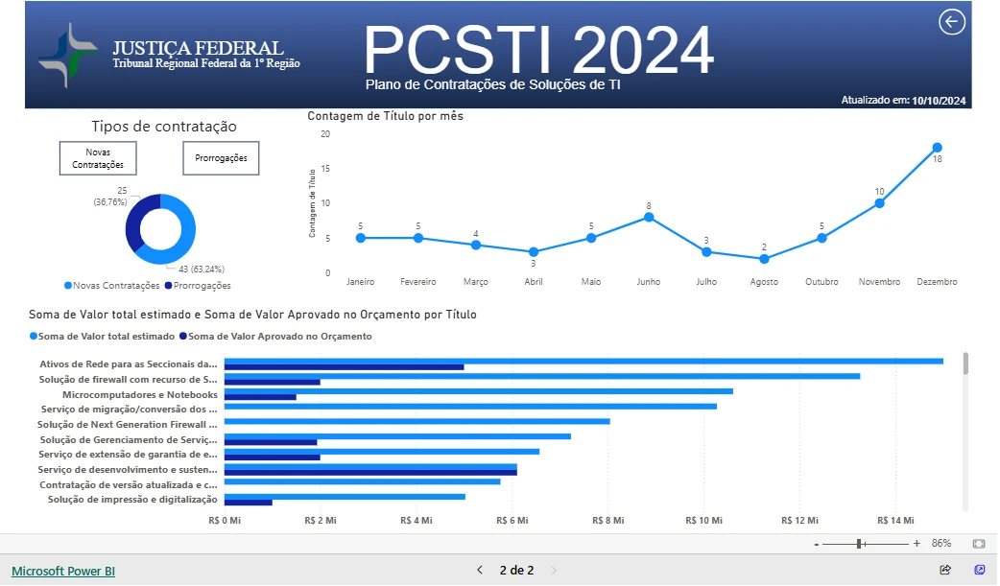

01 / Contexto
O cenário e o escopo
Entrega de BI relacionada à experiência de estágio no Tribunal Regional Federal da 1ª Região. A apresentação utiliza a captura e o link do portfólio original, autorizados pelo autor.
02 / Problema e objetivo
O que precisava ser resolvido
Apresentar informações estruturadas em Excel de forma que fosse possível explorar contratações de TI e valores ao longo do período.
03 / Arquitetura e desenvolvimento
Da fonte à entrega
- 01Excel
- 02Estruturação
- 03Power BI
- 04Visão de contratações
Fluxo descrito a partir da apresentação original do projeto.


04 / Desafios e decisões
Escolhas que sustentam a solução
- Visão temporal e comparação entre tipos de contratação.
- Tabela analítica e recursos de tooltip descritos no portfólio original.
- Hierarquia visual com gráficos e filtros para exploração.
05 / Resultados e evidências
O que é possível verificar
Entrega visual para acompanhamento institucional. Não há medição pública de redução de custos ou de tempo associada a este painel.
Evidência pública
Captura do painel e demonstração Power BI vinculada ao portfólio original. Código e arquivo PBIX não estão publicados em repositório informado.
Vamos conversar
Um próximo desafio
com dados e negócio
Busco oportunidades como Analista de Dados, Analista de BI ou Cientista de Dados, além de funções híbridas entre essas áreas.